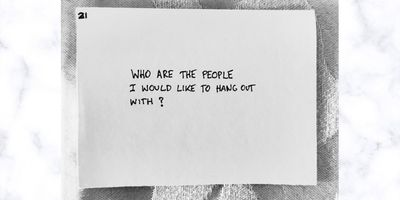
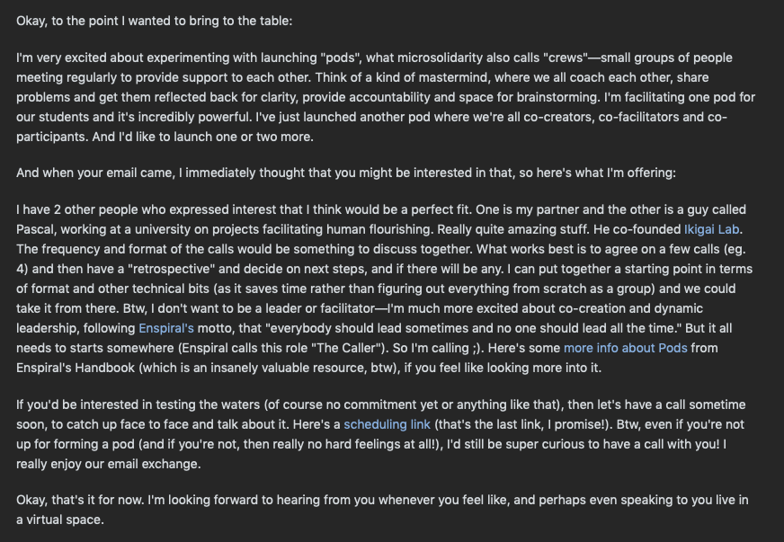

My Microsolidarity Journey
Let’s begin with a bit of context:
I’ve been location independent from 2017 and I absolutely love the freedom of being able to move whenever I feel it’s the right time to do it. There is however a price to pay for that freedom: the pain of saying goodbye to people dear to your heart, knowing that you might never see them again. Life is unpredictable.
I admit, that even if I traveled with a partner, there were times during my travels when I felt quite lonely. I did encounter many wonderful Souls, and the connections were intense but also short. I lacked continuity.
One day I decided to make a list of people I intuitively felt like reaching out to. Some were close friends, and others were people I shared a single powerful moment sometime, somewhere. The following day I sent them all a message.
Some people replied and we had a call, others replied and that was it. Some never replied at all. I considered it a “natural selection”. There’s time and space for each connection. No hard feelings. With some people however I felt a clear “connection match” and some developed into beautiful friendships.
The next step was to experiment with different frequencies for calls. I found that different intervals work better for each relationship – the rarer the call, the more “macro” the perspective. With some people it feels more natural to stay close to each other and reflect together on things that are alive right now, and with others it feels wonderful to look together at an entire year of our lives and share whatever comes up to the surface.
In the process, I also discovered that I generally prefer audio-only calls. Video is nice, but I’d rather go for a walk rather than stare at a computer screen. With time, I gravitated towards async connections, such as long voice-notes, emails and letters.
In a few months, I eradicated the feeling of loneliness, and nurtured myself with recurring 1:1 conversations with people I love.
Microsolidarity Experiments
Discovering microsolidarity in the beginning of 2020 was a huge milestone for me.
Microsolidarity gave me vocabulary to operate with and served as a practical guide to weaving wonderful social interactions at a bigger scale, with a possibility of changing the world together.
Three ideas really struck a deeper chord:
1) People before projects –> start with finding the people that you can co-create magic with
2) Different group sizes serve different purposes –> large groups serve as a “dating pool” to find your small groups where the magic happens
3) Verbs > Nouns –> theory is useful, but focus on the practice
I sat down and made another list.

I let the names sink in for some time, feeling into small groups that would make sense to call into existence. When it felt right, I reached out to some people with an idea of launching “mastermind groups” (which was the vocabulary more familiar to the people I was reaching out to).
Here’s a part of an email exchange with one of the people I reached out to, introducing the idea of co-creating a group.

Over the next few months I launched a few crews:
- The Unicorns 🦄 - digital, 4 people (2 couples), mutual support, March 2020 - January 2021
- Team Angie ⚡️ - digital, 4 people, exploring different topics related to emotional development, May 2020 - May 2021
- Loverz Powerz 💜 - digital, 4 people (2 couples), relationship-focused, May 2020 - May 2021
- Routine Bootcamp 🚀 - digital, 3 people, building routines together based on Metagame Mastermind Format (youtube video), June - November 2020
- The Circle ⚪️ - presential, 4 housemates, weekly sharing circle followed by a co-living talk, February - June 2020
- Pico Sharing Circle 🌀 - presential, ~10 people, bi-weekly sharing circle, which eventually grew into an entire congregation. Here’s the documentation of the circle.
A few reflections:
- While I took the responsibility of being the caller (the person who calls the pod to existence), I deliberately let go of my default facilitating posture and practiced co-creating together. The crews usually started with one or two “meta calls” diving into our intentions and deciding how do we want to be together, including technicalities such as rhythm, format etc.
- Crews had a timeframe agreed in advance. Each cycle was closed with a retrospective when we decided what’s the next step, for example closing the crew or beginning another cycle.
- Even if we committed to the schedule set up in advance, there was always at least one call that we had to skip due to life being life (na-na-na-na-na). Pods tended to work better with meetings no further than one month apart.
- Keeping a recording was kinda useless, but we all enjoyed sharing our notes with each other
- I kept a log of each pod for learning purposes. I’m very grateful that I did, because I’m looking at them as I write this article.
- I loved the process of coming up with the crew name together.
👁 Key Insight:
Start your microsolidarity journey by calling a crew (or a couple of them). Today is a perfect day to do it. You’ll learn all the skills you need along the way, and who knows - your crew(s) might eventually grow into a congregation.
Check out the resources at the end of this article if you need some extra help.
Enspiral
In September 2021 I joined Enspiral, a network of people helping each other do more meaningful work. The network design includes pods (equivalent to crews in microslidarity lingo) to support building relationships within the network. While I haven’t joined any pods, mostly due to all the other crews I had going on at the time, I got involved in Enspiral Europe Connection Working Group hosting bi-weekly Connection Calls for Enspiralites based in Europe.
- Create documentation of the formats tried in EECC to publish in the Enspiral Handbook.
Growing a congregation in Pico Island
What happened in Pico surpassed my wildest dreams.
In a bit over one year since our very first sharing circle, we hosted two community gatherings, launch numerous projects, and created a strong foundation for a thriving congregation.
The most surprising part is that it was actually quite simple. I called a sharing circle, and as people started to spend time getting to know each other on a deeper level, magic started to happen. Of course, as we’re maturing as a congregation we’ll encounter challenges. That’s just a part of the process. With a strong foundation of relationships based on trust, care and support, we’re ready for our next iterations.
I document the process thoroughly here.
👁 Key insight:
It seems that at this point I became a microsolidarity practitioner and a congregation catalyst. I attribute my progress to two core competencies developed over time:
1) practicing crewing –> there’s no learning without practice, and no amount of theory will teach you how to be and co-create together with the real people around you.
2) documenting the process –> publishing my process as an open-source documentation allowed me to regularly reflect on my learning journey. It also created beautiful connections with people who reached out to me with appreciation, questions, feedback and co-creating possibilities.
If there’s one advice I could give to a microsolidarity beginner, it’s to do these two things from the start. I’m available to help if you could benefit from it.
Looking Beyond Pico
In June 2021 I felt a call to connect with Faial, one of the neighbour islands. As I hiked through its forests and volcanoes, I realised that the most wonderful thing about Pico (for me) is that it is a part of an archipelago containing nine islands, each with its own unique energy and people.
One reason why I love islands, is that each of them feels like an entire world. While clearly limited by water and no matter how small, it also feels infinite. There’s just so much to explore. I guess you can tell where I’m going with this. The Azores is not just one world – it’s a Galaxy.
I guess it comes without surprise that my next step is to catalyse Azores Regenerative Network, and plant microsolidarity seeds in all islands, while integrating it with my life-long dream of sailing.
The soil is fertile and the people are already doing the Work.
Let’s see what’s going to sprout from the seeds that we are planting together.
🌱
Gratitude
This post wouldn’t be complete without expressing my deepest gratitude to Rich Bartlett (twitter link) for compiling Microsolidarity and supporting countless people and projects around the world to co-create a beautiful world where all Beings can thrive 💜.
Also, a wholehearted hug goes to everyone with whom I got to practice microsolidarity together. Thank you for co-creating magic ✨.
Resources
- Microsolidarity in Pico: Documentation
- Microsolidarity: Crewing Methods
- Enspiral Handbook: Pods
- Metagame Mastermind Format (youtube video)
- Sharing Circle for Housemates
- Pico Sharing Circle Format
- How To Start a Sharing Circle With Your Loved Ones (and Why You Should)
- Our Life Stories – Session Format
- Session Notes Template
- Crew Log Template
- Crew Invitation Template
- Initial Meeting Template